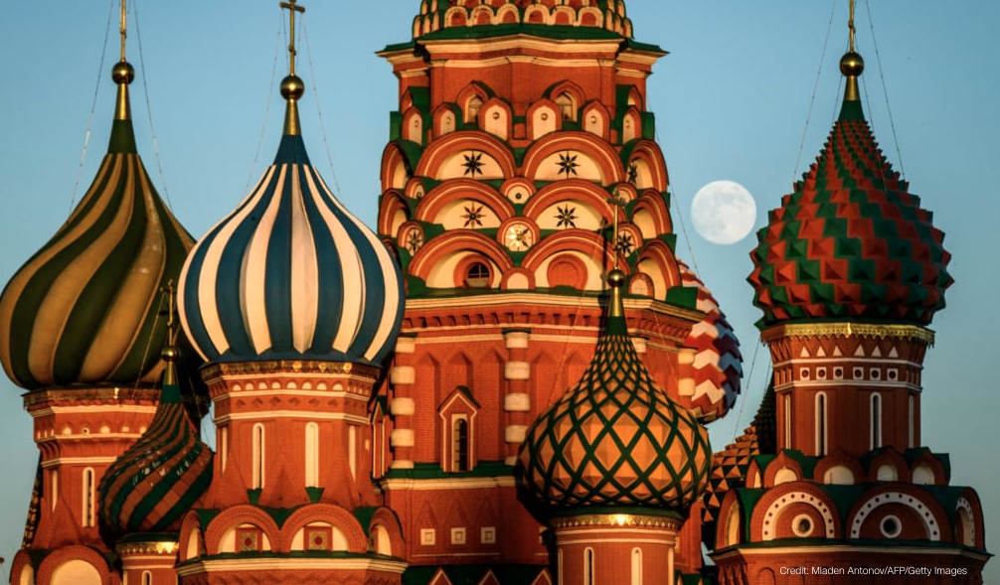
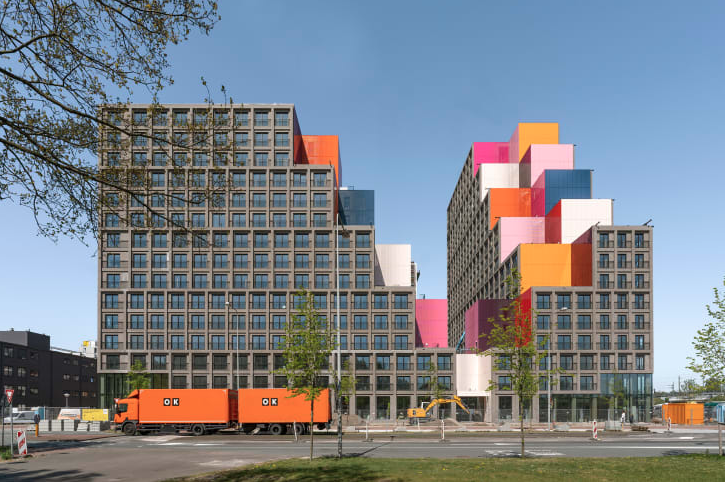
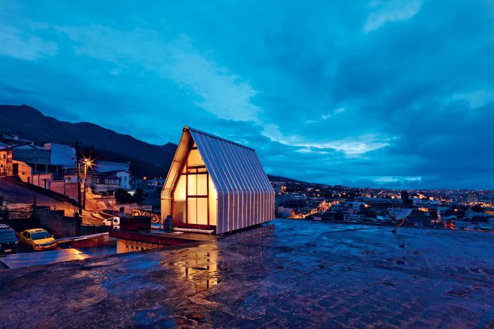

The mysterious origins of Moscow's multicolored landmark
 After Saint Basil's Cathedral was completed in the mid-16th century, a legend began to circulate about the eclectic Orthodox church located in the heart of Moscow. It was an architectural feat -- the tallest structure in the city, thanks to new brickwork knowledge from the Italians -- and it was a show of Russia's might at the end of a century-long war. According to whispers, the Grand Prince of Moscow, infamously nicknamed Ivan the Terrible, had its architects blinded, so that they could never again design a building so majestic. Yet the origins of the structure remain mostly shrouded in mystery. Nearly five centuries on, the architects' identities cannot be confirmed, though it is generally believed that the design should be credited to two architects, named Barma and Postnik Yakovlev. Some historians say that the two names actually reference a single person and that "Barma" was actually Postnik Yakovlev's nickname. "It's really surprising how some of the most basic facts are not really verifiable," said William Brumfield, a historian of Russian architecture and author of the recent book "Journeys through the Russian Empire," over a video conference call. Documentation is scarce, leaving historians like Brumfield to hunt for clues. "We encounter this problem many times in the history of Russian architecture, even as late as the 18th century. There were many fires, invasions, cataclysms. Moscow burned in 1812 during the Napoleonic invasion. The documents are often just not there," explained Brumfield.
The transformative buildings set to shape the world in 2021
 The pandemic may have brought work to a halt on projects around the world, but next year is nonetheless set to welcome an exciting array of new buildings. Commissioned and designed years ago, these structures are unlikely to reflect the new design priorities that will emerge from Covid-19. Yet, they are very much in keeping with the civically generous and sustainable spirit of the world's best contemporary architecture. From museums to performing arts venues, these are CNN Style's most anticipated buildings opening or completing in 2021. Far Rockaway Library, New York Snøhetta This striking public library in the Far Rockaway neighborhood of Queens, New York, will replace a small but popular library previously on the same site. But at 20,000 square feet, the new facility doubles the size of the space provided to the community. Light will pour in through a triangle of glass at the entrance -- as well as through the striking translucent shell. According to the project architects Snøhetta, the Norwegian firm behind the groundbreaking underwater restaurant Under, the building's golden hue reflects the color of the Long Island sky.
The world's most stunning micro-houses
 Casa Parásito by El Sindicato Arquitectura San Juan, Ecuador Andr.s Villota, Paolo Caicedo More a minimal design object than a house, Casa Parásito accommodates two people on a rooftop in San Juan, Ecuador. The design concept hinges on an A-frame facade. Within, an interior layout is marked by a rectangular core -- also the main living area -- from which all other utilitarian spaces, such as the kitchen, dining table, bathroom, bed, work area, and storage are accessed. A large transparent window allows natural light to filter through into the interior. Orientated toward the north, Casa Parasito opens out to views of the city and the Cotacachi, Imbabura, Mojanda and Cayambe volcanoes. FLEXSE by SA Lab St Petersburg, Russia Ekaterina Titenko A modern take on a Scandinavian grill house, FLEXSE is a prefabricated micro-dwelling with an impressive list of seasonal adaptations. Though the first prototype was intended for cooking, it can be tailored for different purposes: a sauna, a guest dwelling, and even a complete tiny house. 8 houses built in impossible places Made entirely of recyclable materials, the structure can be assembled in parts on-site or positioned on foundations, allowing it to be set up in remote areas, the countryside or even on water. Its main features include an angled roof to minimize the accumulation of snow, a wood-stripped interior and exterior, and an open grill that warms the space.